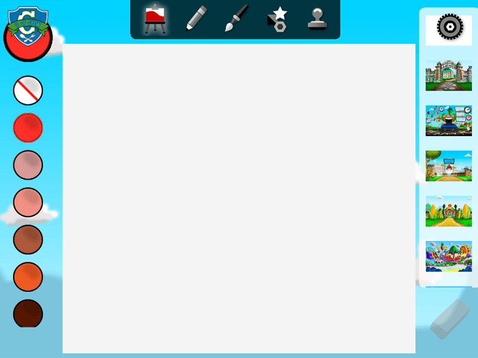

Art Department Help
With U of Chew's Art Department, you can create your own pictures using U of Chew characters, scenes, and your imagination!
The Art Department includes dozens of simple-to-use, immersive painting, drawing, and mixed media collage tools.
Art Tools
The Art Tools are above the canvas area.

The Canvas Tool gives you access to a blank canvas, a color palette, and images for your background.

Choose the Canvas Tool and scroll through the right panel to see more images.
Tap an image to move it to the canvas.

We're now going to now use a blank canvas to demonstrate all the Art Tools.
The Drawing Tool offers crayons, markers, pens, and pencils, with the ability to control the size and shape of the line.

Choose the Drawing Tool and scroll through the right panel to see more choices.

Tap a tool on the right and drag your finger on the canvas to draw.

To change the size or style of the line, tap and hold the pen until the box with the slider appears. Choose the straight or wavy line to change shape. Use the slider to change the size.


The Painting Tool offers a variety of brush styles with the ability to control the size and shape of the stroke.

Choose the Painting Tool and scroll to see more choices.
Tap a tool on the right and drag your finger on the canvas to draw.

To change the size or style of the line, tap and hold the pen until the box with the slider appears. Choose the straight or wavy line to change shape. Use the slider to change the size.


Tap and scroll the Color Palette to choose the color to fill a blank Canvas, or set the color for any other tool. You can color your pens, brushes, shapes and even stamps!

The Color Selector indicates which color or texture is currently in use.

Tap the Color Selector and scroll to choose Texture Patterns.

Tap the Color Selector again and use the Color Palette to select a color and change the color of the texture.

The Shape Tool allows you to choose a shape and fill it with colors and textures from the palette.

The shapes will be whichever color and texture is currently chosen.

Tap a shape to have it appear in the center of the canvas. Pinch or stretch with two fingers to resize and rotate.

The Stamp Tool provides characters and props that can be placed anywhere you choose on the canvas.


Tap a stamp to have it appear in the center of the canvas. Pinch or stretch with two fingers to resize and rotate.

Change the color of the stamp by tapping a color on the palate.

Tap the Eraser to remove images on the canvas. You must have the Shape or Stamp Tool to remove specific objects or images.

When using the Drawing or Painting Tool, tap the eraser and then move your finger over the lines you wish to erase.
Here's some examples of art created by others:


Lets see what you can do!!!
Controls
Tap on screen and the U of Chew icon in the upper left for the Action Bar and a Gear icon in the upper right for the Settings Bar appear:

If you don't wish to choose any of the options, tap anywhere on the screen and the Action Bar disappears.
Action Bar
Tap U of Chew's icon in the upper left for the Action Bar:

If you don't wish to choose any of the options, tap anywhere on the screen and the Action Bar disappears.
Home - Return to the Title Screen.
FatRedCouch - View other apps available for your device.

Save - Save the current image to the Gallery.

Camera - Save the current image to your device to share with family and friends.

Load - Load images you've saved in the Gallery.

Start Over - Reset the canvas.
Help - View the Help.

Settings Bar
The Settings Bar offers options for controlling some features.
Tap the Gears icon and the following appears:

Music - Turn on/off the background music.